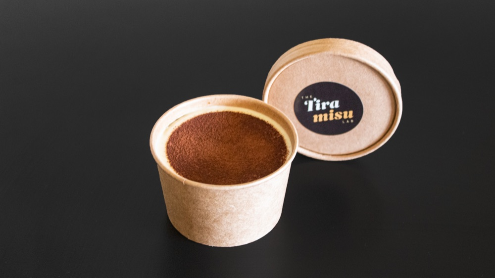
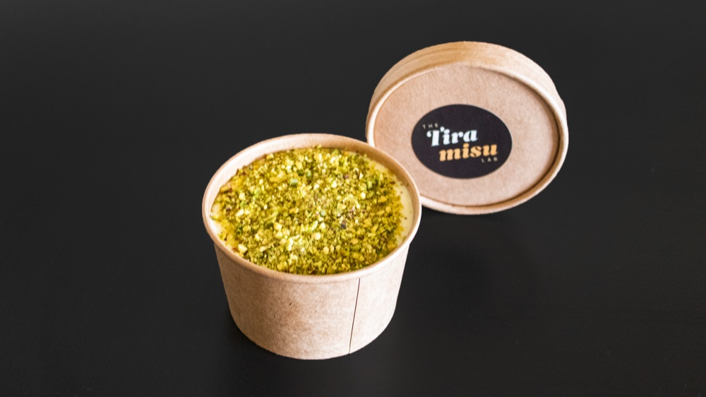
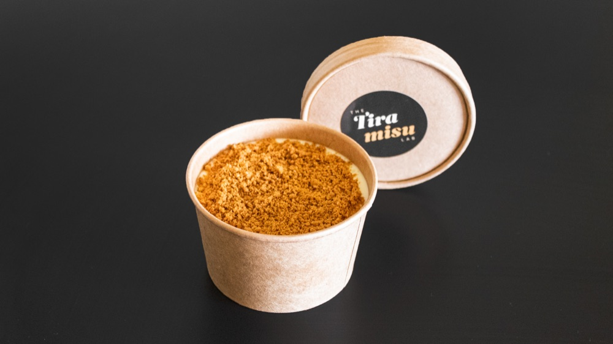
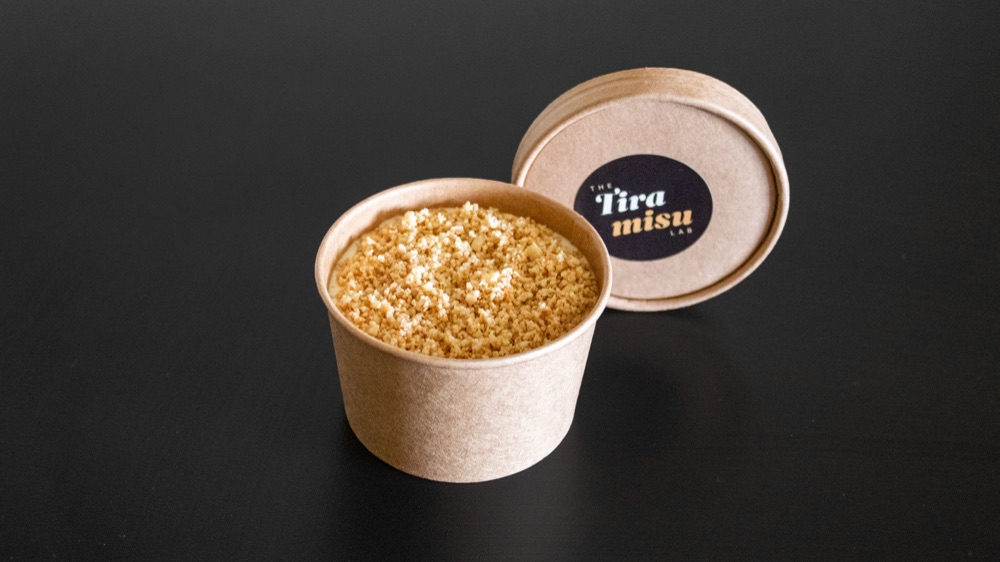

Italian · Made in Dublin
Where every layer is built from scratch — including the biscuits and the mascarpone. No shortcuts, just the good stuff.
Open on Deliveroo every weekday · 8–11pm
About us
We’re an artisan tiramisu maker with one rule: no shortcuts. Every tiramisu is built by hand, layer by layer — never pre-packed, never bought in.
We use only free-range eggs and rich Irish double cream, our ladyfinger biscuits (savoiardi) are baked by us, and our mascarpone is made from scratch in our own kitchen. The result is a tiramisu that tastes of real, honest ingredients — the difference you notice on the first spoon.
Flavours
Every flavour is built on the same from-scratch base — espresso-soaked homemade ladyfingers and mascarpone.




Top-quality ingredients
A tiramisu is only as good as what’s in it. We don’t cut corners on a single layer — here’s what makes ours different.
We brew our coffee the traditional Italian way — in a stovetop moka pot — for a rich, authentic espresso that soaks right through every ladyfinger.
Only free-range eggs in our zabaglione — laid by hens that roam free, sunbathe, and generally live their best life. Turns out happy chickens make a richer custard.
We use rich Irish double cream — fresh, local, and the reason every spoonful tastes so indulgently smooth.
Our ladyfinger biscuits are baked in-house — light and just-sweet, sturdy enough to soak up the coffee without going to mush.
We make our mascarpone from scratch, so the cream is silky and rich — no stabilisers, no aftertaste, just the real thing.